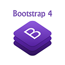
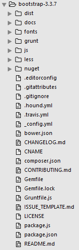

Le Framework Bootstrap
Mon Sommaire Veilles Technologiques
Publié le 23 Avril 2020

1. Présentation
Les Frameworks sont des boîtes à outils qui se révèlent de plus en plus indispensables aujourd’hui. Bootstrap est un framework CSS gratuit et open-source destiné au développement Web frontal réactif et mobile-first. Il contient des modèles de conception basés sur CSS et (éventuellement) JavaScript pour la typographie, les formulaires, les boutons, la navigation et d'autres composants d'interface. légèrement derrière le framework Vue.js.
2. Historique
Bootstrap est le sixième projet sur GitHub avec plus de 135 000 étoiles. Bootstrap, à l'origine nommé Twitter Blueprint, a été développé par Mark Otto et Jacob Thornton sur Twitter comme cadre pour encourager la cohérence entre les outils internes. Avant Bootstrap, diverses bibliothèques étaient utilisées pour le développement d'interfaces, ce qui entraînait des incohérences et une charge de maintenance élevée.
Après quelques mois de développement par un petit groupe, de nombreux développeurs de Twitter ont commencé à contribuer au projet dans le cadre de Hack Week, une semaine de style hackathon pour l'équipe de développement Twitter.
Il a été renommé Twitter Blueprint en Bootstrap, et publié en tant que projet open source le 19 août 2011. Le 31 janvier 2012, Bootstrap 2 a été publié, qui a ajouté la prise en charge intégrée des Glyphicons. Cette version prend en charge la conception Web réactive .
La prochaine version majeure, Bootstrap 3, est sortie le 19 août 2013. Elle a repensé les composants pour utiliser un design plat et une première approche mobile .
Mark Otto a annoncé Bootstrap 4 le 29 octobre 2014. Mark a suspendu ses travaux sur Bootstrap 3 le 6 septembre 2016, pour libérer du temps pour travailler sur Bootstrap 4. Bootstrap 4 a été finalisé le 18 janvier 2018. Et depuis le 28 novembre 2019 nous sommes à la version 4.4.1
3. Prise en main
Vous créez des pages web et vous passez beaucoup (trop) de temps avec le CSS ?
Alors Bootstrap est fait pour vous !
3.1 Installation
L'installation de Bootstrap est simple : cliquez sur le bouton de téléchargement sur le site du framework. Vous avez à disposition trois boutons :
- "Download Bootstrap" : permet de récupérer juste les fichiers nécessaires au fonctionnement de Bootstrap.
- "Download source" : permet de récupérer en plus tous les fichiers sources.
- "Download Sass" : c'est un portage de Bootstrap en Sass pour les utilisateurs de projets qui utilisent Sass (Rails, Compass...).
Quand vous téléchargez la librairie avec le bouton "Download source", vous obtenez un fichier zippé contenant un répertoire bootstrap-3.3.7 qui contient lui-même un certain nombre de fichiers et de dossiers, comme le montre la figure suivante.
Il faut distinguer deux situations :
- Pendant la phase de développement, il est intéressant de pouvoir naviguer dans le code de Bootstrap, il faut donc mettre les fichiers non compressés.
- Lorsque votre site est en ligne, vous n'avez plus à vous inquiéter du code et seule compte la vitesse de chargement, il faut donc cette fois utiliser les versions compressées (min).
Pour que Bootstrap fonctionne il faut le déclarer dans les pages HTML, qui doivent être impérativement au format HTML 5, il faut donc prévoir le bon DOCTYPE :

Il faut ensuite déclarer au minimum le fichierbootstrap.min.css (oubootstrap.css) dans l'en-tête de la page web :

À partir de là toutes les classes sont accessibles… Évidemment vous devez adapter le lien selon la localisation de vos fichiers.
Si vous utilisez des composants JavaScript, vous devez également référencer la librairie de Bootstrap ainsi que jQuery (la librairie jQuery ne fait pas partie des fichiers téléchargés avec Bootstrap et doit être récupérée indépendamment sur http://jquery.com/ ) :

Prise en main rapide
Réaliser un site beau site en moins d'une heure et demi
4.Forces et Faiblesses
4.1.Forces
- Il fait gagner du temps de développement parce qu'ils nous proposent les fondations de la présentation.
- Il normalise la présentation en proposant un ensemble homogène de styles.
- Il propose une grille pour faciliter le positionnement des éléments.
- Il offrent des éléments complémentaires : boutons esthétiques, barres de navigation, etc...
- La grande diffusion de nouveaux moyens de visualisation du web (smartphones, tablettes…) impose désormais la prise en compte de tailles d'écran très variées ; Bootstrap prend en compte cette contrainte.
- Sa popularité fait qu’elle a une très grande communauté autour d’elle
4.2 Limites
Pour utiliser efficacement un framework il faut bien le connaître, ce qui implique un temps d'apprentissage. La normalisation de la présentation peut devenir lassante en lissant les effets visuels. et Bootstrap n'echappe pas non plus à la règle.
5. Innovations
Les innovations important de la version actuelle sont:
- La prise en charge de CSS Flexible Box
- Augmentation de la taille de police globale de 14px à 16px
- Laissant tomber
les panel,thumbnail,pageretwell composants - Suppression de la
Glyphiconspolice de l’icône - Style de formulaire, boutons, menus déroulants, objets multimédias et classes d'images améliorés
- Ajouts de styles de validation de contrôle de formulaires plus flexibles grâce à moins de sélecteurs chaînés
Les innovations de la prochaine version
Bootstrap 5 est censé être la prochaine version du framework frontal open source le plus populaire au monde. Les changements majeurs incluent:
- Suppression de jQuery en faveur de JavaScript vanille
- Réécriture de la grille pour prendre en charge les colonnes placées à l'extérieur des rangées et les gouttières réactives
- Suppression du support pour IE10 et IE11
- Déplacement de l'infrastructure de test de QUnit vers Jasmine
- Ajout d'un ensemble personnalisé d'icônes SVG
Le 19 mars 2020, Bootstrap a annoncé qu’ils ont nettoyé les icônes existantes au profit des Icônes Bootstrap Alpha 3 . Ils ont créé de nouvelles pages de permalien pour chaque icône et ajouté des centaines de nouvelles icônes, le tout dans une seule version, la version 5. Ce sont plus de 500 icônes qui sont prete. Alpha 3 a été publié sur GitHub et npm (nom du package bootstrap-icons). Mettez la main dessus depuis GitHub , en mettant à jour v1.0.0-alpha3 ou en accrochant les icônes de Figma .
sources
- https://en.wikipedia.org/wiki/Bootstrap_(front-end_framework)
- https://blog.getbootstrap.com/2019/11/28/bootstrap-4-4-1/
- https://web.developpez.com/actu/285741/Bootstrap-4-4-0-est-disponible-et-apporte-de-nouvelles-fonctionnalites-et-corrections-de-bogues/
- https://rebeccamanegbo.github.io/veille-framework/